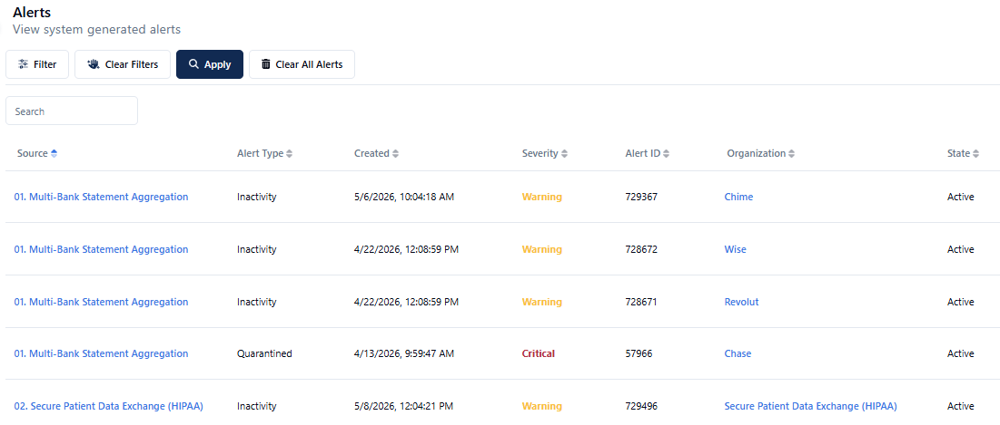

Runtime File Share Loop
AWS VM runtime monitors a local file share. Filename filter and rename steps keep the synthetic loop alive indefinitely.
What This Flow Demonstrates
An AWS VM-hosted Boomi runtime agent monitors a local file system (file share). A filename filter prevents the same file from being picked up repeatedly, and two rename steps — one adding a date on pickup, one stripping it on delivery — create a perpetual loop that generates continuous activity.
This flow demonstrates the on-premises runtime agent capability, which is critical for customers who need to bridge local file systems, network shares, or air-gapped environments to cloud MFT.
Key Features
- Boomi runtime agent deployed on AWS VM (downloadable for on-prem use)
- Local file share monitoring via the runtime
- Filename filter — prevents re-pickup of unchanged files (date-modified doesn't update in the loop)
- Source rename: appends a date to the filename on pickup
- Target rename: strips the date back out on delivery — restoring the original filename
Runtime Under HQ
Show the on-premises runtime agent deployed in the HQ organization.
-
1
Navigate to Organizations → Headquarters → Nodes.
-
2
Show Runtime One — deployed on AWS. This represents the runtime agent running on a VM (or on-prem server for real customers).
-
3
Point out the Download Thru Node button — Windows and Linux scripts are available here. This is how customers deploy the runtime agent to their own servers.
Talking point: the runtime is a lightweight agent that bridges on-prem file systems to cloud MFT — no firewall changes required, outbound-only connectivity.
-
4
Under HQ, open the Local File Share endpoint. Show the source path — this is what the runtime monitors. Explain how the agent reads the local file system on the interval.
Inspect Flow 06 & Filename Filter
Show the filename filter that prevents the loop from stalling.
-
1
Navigate to Flows → 06 File Share to File Share via MFT Runtime.
-
2
Show the source path configuration — the runtime monitors this local path.
-
3
Show the filename filter. Explain why it's needed: in the loop, the file's date-modified timestamp doesn't update, so without a filter the runtime would see the same file as "already processed" and skip it. The filename filter (matching on date-appended names) ensures each iteration looks like a new file.
Rename Steps & Activity
Walk through the two rename steps that power the perpetual loop, then verify in Activity.
-
1
Click Actions → View Rename on the source side. A date is appended to the filename on pickup —
report.csvbecomesreport_20260501.csv. This makes each iteration look like a new file to the runtime. -
2
On the target side, show the rename step that strips the date back out — restoring the original filename (
report.csv) so the loop can continue indefinitely without accumulating date suffixes. -
3
Navigate to Activity → filter by Flow 06 → Apply. See files arriving without a date, acquiring a date mid-flight (source rename), and exiting with it stripped (target rename). Expand any entry to view the full lifecycle.
Alerts & Monitoring
Walk the pre-loaded demo alerts — two of the strongest monitoring talking points in the demo.
Inactivity Alert
Fires when a flow has not processed a file within an expected time window. The talking point: "What happens if a partner just stops sending? You find out instantly — before a downstream process fails or a business SLA is breached."
This resonates with operations teams who currently have no visibility until someone calls to report a missing file.
Connection Error Alert
Fires when a configured endpoint becomes unreachable. The talking point: "You don't wait for the partner to report a connectivity issue — Boomi sees it immediately and notifies you. Proactive, not reactive."
Where Alerts Are Configured
Alerts are configured per flow endpoint inside the flow builder — each source or target endpoint has an Alerts tab. Walk through this when discussing security or monitoring during the Flow 01 source walkthrough if that conversation comes up.

Patterns Reference
All six flows together cover every major MFT integration pattern.
Use this as a quick reference when mapping a prospect's use case to a specific demo flow during discovery.
| Pattern | Flow(s) | Use Case |
|---|---|---|
| Hosted SFTP Server | Flow 01 | Multi-bank inbound, partner-to-enterprise |
| Manual Upload Widget | Flow 01, 05 | Ad-hoc file injection, no SFTP client needed |
| Scheduled / Batch Transfer | Flow 03 | ERP exports, end-of-day reports, regulatory submissions |
| SFTP Pull | Flow 04 | Enterprise-initiated pull, no partner push required |
| Integration Round-Trip | Flow 02 | MFT + Boomi Integration combined, outcome-based renaming |
| Fan-Out Distribution | Flow 05 | One source → multiple partner targets, path-based routing |
| On-Prem Runtime Agent | Flow 06 | Local file share, air-gapped environments, bridge to cloud MFT |
Return to start